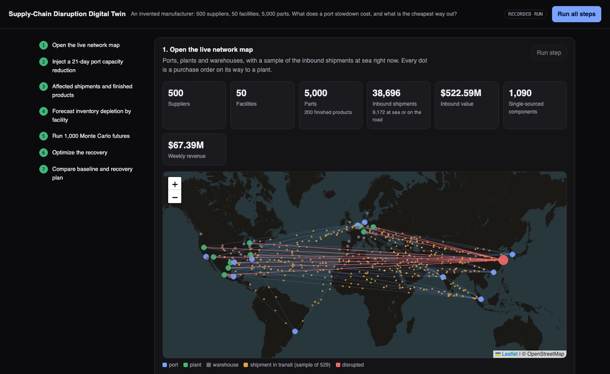
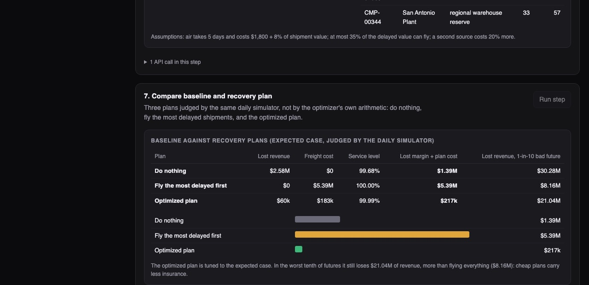

Python · Supply-chain optimization · 2026-10
What Does a Three-Week Port Slowdown Cost, and What Is the Cheapest Way Out?
A digital twin of a manufacturer's supply network. It turns a port slowdown into shipment delays, follows them through the bill of materials to plant stock-outs and lost sales, simulates 1,000 futures, and solves for a recovery plan. On an invented network the optimized plan cost $0.22M where the usual reaction, flying everything late, cost $5.39M.

Built from a written blueprint as one vertical slice, on a synthetic network: port and city locations are real, but all 500 suppliers, 5,000 parts, 294,897 shipments and every dollar are invented. The network was generated with enough safety stock that an undisturbed run loses nothing, so all losses shown come from the injected event. Only one kind of disruption (a port capacity cut) is modelled, and it is injected by hand: there are no live weather, vessel or news feeds. Not built: Kafka, Terraform, single sign-on, optimization over many scenarios.
01 — The problem
A manufacturer usually learns about a supply problem when an order misses its date. By then the choices are bad ones: stop a line, or pay to fly parts in. The useful questions come earlier. If a port slows down for three weeks, which shipments are late, which products does that touch, when do the plants run out, how much is at stake, and which mix of airfreight, second suppliers and warehouse stock gets out of it for the least money?
Blueprint 3 of ten in an enterprise build book, built as the demo scenario end to end.
02 — What I built
A Python service on PostgreSQL with a background worker and a map-based web page, started by one docker compose up.
- The twin: the network held in memory: a bill of materials exploded down to purchased parts, stock at each plant, and every open or planned inbound shipment.
- Delay model: a queue at the port turns lost capacity into days of waiting for each shipment.
- Simulator: each plant, day by day for 12 weeks; run once for the expected case or a thousand times with uncertainty.
- Optimizer: a mixed-integer model that chooses shipments to fly, purchases from a second supplier and transfers from warehouse reserve.
- Forecasts: arrival-time and supplier-lateness models, each scored against a simple baseline.
03 — How it was built
- 01
A port is a queue
If a port normally runs at 80% of its capacity and loses 70% of that capacity for 21 days, work arrives faster than it leaves and a backlog builds. A shipment's delay depends on the day it reaches the port: about 13 days at the worst point, and the backlog takes roughly two more months to clear after capacity returns. A cut the port can absorb (10%) delays nothing, and a test checks that.
backlog = np.where(t <= duration, grow * t, np.maximum(0, peak - (1 - rho) * (t - duration))) - 02
Follow the delay down the bill of materials
A finished product is made of sub-assemblies, which are made of purchased components. Walking that tree down to the components gives, for each plant, a table of how many of each component one finished unit needs. A delayed component then points to every product that contains it. Here 1,224 delayed components touched all 200 products, but only 36 actually lost sales, because most plants had enough stock to wait.
for c, qc in explode(child).items(): out[c] += q * qc - 03
Simulate every plant, every day
Each day a plant receives what arrives, builds what demand asks for as far as its scarcest component allows, and uses up stock. A few days of finished goods in the warehouses absorb the first shortfall. The same code runs one future or a thousand at once: the Monte Carlo run draws a different cut depth, cut length and transit time for every shipment in each future.
factor = np.where(uses[None, :, scarce], ratio[:, None, scarce], 1.0).min(axis=2) - 04
Solve for the cheapest recovery
The optimizer decides, for 5,122 delayed shipments, which to send by air (yes or no each), how much to buy from a second supplier that does not use the same port, and how much to pull from regional warehouse reserve. It minimises lost profit plus freight plus the premium for the second source. The model has 78,437 unknowns and solves in about four seconds.
moved[(j, late)].append((s["qty"], 1 - x[k])) # arrives late unless flown moved[(j, fast)].append((s["qty"], x[k])) - 05
Never let the optimizer mark its own homework
Every plan is scored by the daily simulator, not by the optimizer's own arithmetic. That caught a real error: the optimizer works in 3-day periods and at first assumed a delivery was usable from the start of its period. It reported no losses; the simulator found $0.77M. Counting a delivery only from the next period that starts after it arrives closed the gap to $0.06M.
late = math.ceil(max(0, s["eta"] + delay.get(k, 0)) / BUCKET)
04 — Results
The scenario. Shanghai loses 70% of capacity for 21 days. 5,122 inbound shipments worth $76M are delayed by 6.8 days on average. First plant stock-outs appear between day 33 and day 40. Expected lost revenue: $2.58M. Across 1,000 simulated futures the median is $3.3M and one future in ten is worse than $36M.

Three plans, same simulator (expected case):
| Plan | Lost revenue | Freight | Total cost |
|---|---|---|---|
| Do nothing | $2.58M | $0 | $1.39M |
| Fly the most delayed | $0 | $5.39M | $5.39M |
| Optimized | $0.06M | $0.18M | $0.22M |
Total cost is lost profit plus the cost of the plan. The optimized plan flies 46 shipments instead of 1,805, buys from a second supplier 5 times and pulls warehouse reserve 17 times.
The catch. The optimizer plans for the expected delay. In the worst tenth of futures its cheap plan still loses about $21M of revenue, against about $8M for flying everything: a cheap plan carries less insurance. The page shows that tail next to the saving.
Forecasts against baselines (the most recent 180 days held out): arrival time off by 1.42 days on average against 1.94 for the lane's usual time; the 80% range contained the real arrival 79% of the time. Supplier lateness: AUC 0.827.
Checks. 17 tests: the queue arithmetic by hand, the parts explosion recomputed independently, an undisturbed network losing nothing, the optimizer beating both simpler plans, and one tenant unable to see another's scenarios, shipments or suppliers.
05 — What I'd do next
- Optimize over many futures at once so the plan pays for insurance on purpose.
- More disruption types (supplier shutdown, lane closure) and a real event feed.
- Let lost production be caught up later instead of counting it as lost.